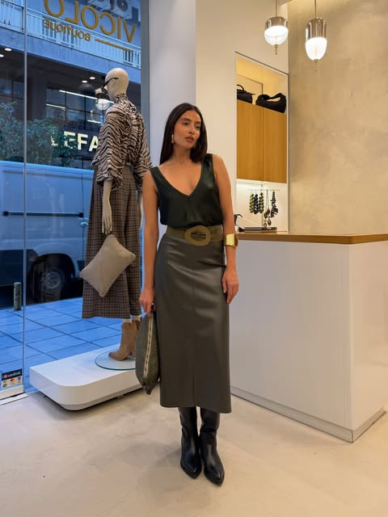
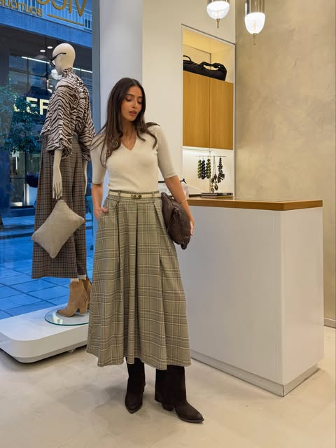

Η πορεία


Σε συλλογές
SS23
Η πρώτη άνοιξη στο Instagram
Η συλλογή που έφερε τους πρώτους σταθερούς πελάτες από το διαδίκτυο.
SS24
Παπούτσια & αξεσουάρ
Προσθέσαμε υποδήματα και δερμάτινα — το look ολοκληρώνεται μέσα στο μαγαζί.
FW25
Πανωφόρια που κρατούν χρόνια
Μάλλινα και κασμίρ σε γραμμές που δεν βγαίνουν από τη μόδα.
FW26
Τώρα στο ράφι
Η τρέχουσα συλλογή, με νέες παραλαβές κάθε εβδομάδα.

